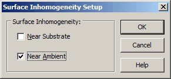

Surface Inhomogeneity
Surface Inhomogeneity
Navigation: OptiChar Menu Commands > Characterization Menu > Surface Inhomogeneity |
` <idh_bulk_inhomogeneity.htm>`__ ` < idh_characterization_menu.htm>`__ ` <idh_simplify_model.htm>`__ |
This option provides a search for the surface inhomogeneities in thin films. It is possible to search for inhomogeneity Near Ambient Medium and Near Substrate independently.

The Surface Inhomogeneity Setup window has two checkboxes.
·If the checkbox Near Substrate is checked, then the program provides a search for the film inhomogeneity near the substrate boundary. This inhomogeneity is modeled by a parabolic deviation of the inhomogeneity factor from 1 in a small vicinity of the substrate boundary.
·If the checkbox Near Ambient is checked, then the program provides a search for the film surface inhomogeneity near the ambient boundary in a following way. It is assumed that there is a thin overlayer with the refractive index independent on its thickness. It is further assumed that this overlayer consists of the same material as the film, but has 50% porosity. The refractive index of the overlayer is calculated using the Maxwell-Garnett effective medium theory. The only unknown parameter is the total thickness of the overlayer. Note that it may be difficult to estimate the results of the near ambient characterization using the plot of the inhomogeneity factor (if the thickness of overlayer is small). The user can find the thickness of overlayer in the Layer Report in the View submenu.